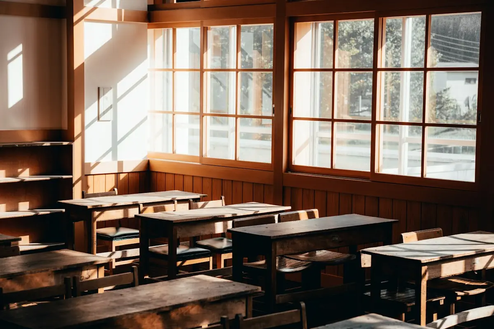

小学1年〜6年
小学生コース
算数・国語を中心に、計算の土台と文章を読む力を育てます。「宿題が終わらない」のご相談も多いコースです。
- 週1回から通えます
- 1コマ60分・80分を選べます
月謝 9,900円〜（税込・週1回60分）
成績の数字より先に、「自分で解けた」という感覚を大切にしています。それが続ける力になるからです。
中2の方程式でつまずいたら、小6の文字の式まで戻ることもあります。学年にこだわらず、土台から積み直します。
正解・不正解だけで終わらせず「どうしてそう考えた？」と聞きます。自分の言葉で説明できたら、その単元は卒業です。
授業の最後に、次回までの家庭学習を一緒に決めます。量は「15分で終わる」くらいから。無理なく続けられることが一番です。

家でやった問題を一緒に見て、できたところをまず確認します。
講師が短く説明し、すぐに自分で解きます。交互に進むので待ち時間はわずかです。
今日の内容を3〜5問で確認。ここで解ければ次の単元へ進みます。
家庭学習の内容を決め、指導報告に書いてお子さまに渡します。
算数・国語を中心に、計算の土台と文章を読む力を育てます。「宿題が終わらない」のご相談も多いコースです。
月謝 9,900円〜（税込・週1回60分）
英語・数学を中心に、学校の進度に合わせて定期テストの準備をします。理科・社会の質問にも対応します。
月謝 14,300円〜（税込・週1回80分）
「塾で何をしているのかわからない」をなくすため、3つの方法でご家庭とつながっています。
その日にやった単元、できたこと、家庭学習の内容を1枚にまとめてお渡しします。
教室長と、これまでの様子と次の3か月の計画をお話しします。オンラインでも受けられます。
欠席・振替の連絡や、ちょっとした気がかりも気軽にどうぞ。授業中は折り返しになります。
実際の授業を受けて、お子さまに合うかどうか確かめてください。体験後の無理な勧誘はしません。